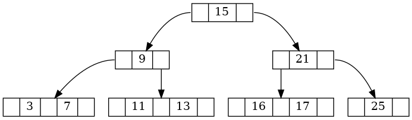

Sucessor
Imagine que você tem uma árvore de busca 2–3 apontada pelo ponteiro p com a seguinte estrutura:
typedef struct No23 {
int key[2]; // usamos APENAS key[0] e key[1]
struct No23 *child[3]; // usamos APENAS child[0..2]
int nkeys; // SEMPRE 1 ou 2
int leaf;
} No23;
Por exemplo,

A tarefa consiste em
encontre o sucessor de um valor k na árvore de busca 2–3 apontada por p e armazene em resp.
Caso o sucessor não exista armazene -1 em resp.
No exemplo acima, para k = 13, isso nos daria
resp => 15